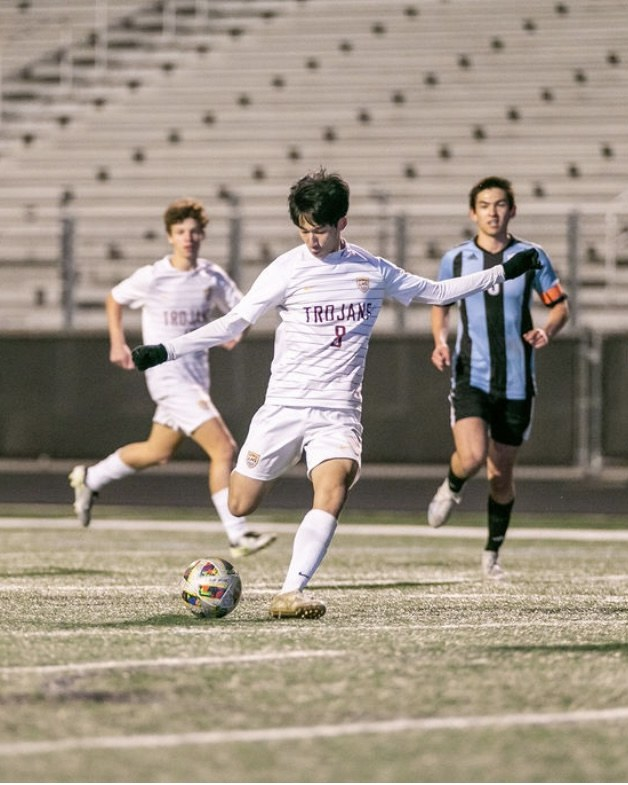

About Me
I grew up in Japan and Taiwan before moving to Marietta, Georgia. Living in different countries gave me fluency in English and Japanese, conversational Mandarin, and an appreciation for working with people from different backgrounds. I am currently studying Korean at an intermediate level.
At Lassiter High School, I played varsity soccer, served as a school ambassador, and was a member of the Honor Society. I also competed in DECA, placing 3rd at regionals in 2024 and 14th at state in 2025, and representing Georgia at DECA's International Career Development Conference (ICDC) in 2026.
During high school I also held several jobs. I tutored students in Algebra through Precalculus for more than 90 hours, designing individual lesson plans, including accommodations for a student with a learning disability. I coached youth soccer players in individual and small-group sessions. At the Consulate General of Japan in Atlanta, I assisted more than 1,000 voters across two national elections in both English and Japanese.
I arrived at Georgia Tech with a strong interest in electronics but little hands-on experience. To change that, I joined the Georgia Tech Solar Racing team in my first semester, where I have updated the firmware for our new car's driver display and assembled an analog sensor board. Much of that work did not succeed on the first attempt, and troubleshooting it taught me more than anything else. I also began my first independent project, an Arduino alarm clock, which became my Discovery Project.
Going forward, my goal is to take on a more ambitious project each year as my skills grow.

Education
Georgia Institute of Technology
- DegreeB.S. Electrical Engineering
- ThreadsCircuit Technology, Electronic Devices
- GraduatingMay 2030
- GPA4.0
Coursework
- ECE 2020, Digital System Design (Fall 2026): Boolean algebra, combinational and sequential logic, finite state machines, HDL, CMOS, and FPGA implementation
- ECE 2040, Circuit Analysis (Spring 2027)
- ECE 2026, Introduction to Signal Processing (Spring 2027)
Lassiter High School
- Varsity Soccer: Trojan Award (2024, 2026) and the Libby Scholarship
- DECA: 3rd at Regionals (2024), 14th at State (2025), ICDC (2026)
- School Ambassador
- Honor Society
Skills
- HardwareSoldering (iron and solder paste), reflow oven, hot plate, PCB assembly, multimeter testing, breadboarding, KiCad
- ProgrammingPython, Java, MATLAB, C/C++ for Arduino, TI Tiva firmware, STM32 (learning)
- ToolsCANalyzer, Wokwi, Git and GitHub, DaVinci Resolve, CapCut, Canva
- LanguagesEnglish and Japanese (native), Mandarin (conversational), Korean (intermediate)
Outside of class
Soccer has been a big part of my life. In addition to playing varsity at Lassiter, I played club soccer for the North Atlanta Soccer Association, where our team won several regional tournaments and reached the semifinals of the US Club Finals in Denver, Colorado. I also enjoy playing piano and video games.
I hope to travel more widely, especially in Europe, and I plan to start through one of Georgia Tech's study abroad programs.